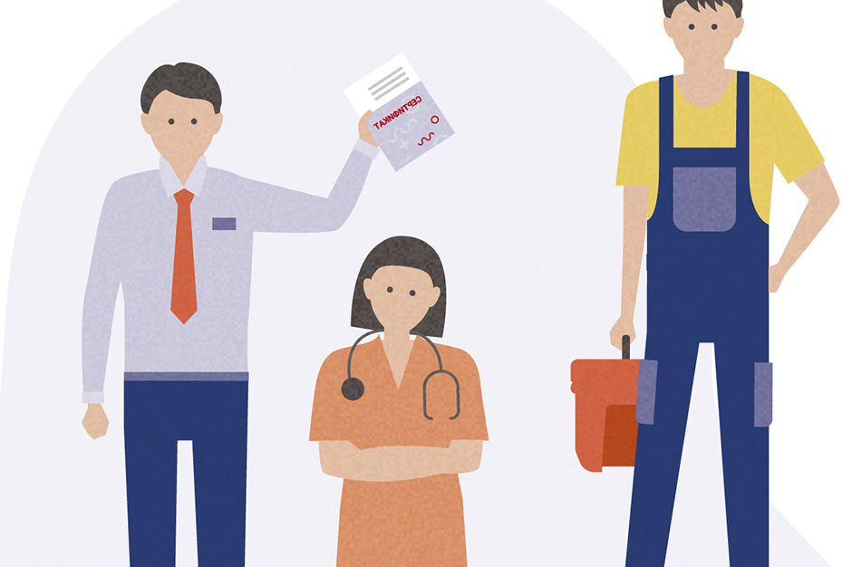
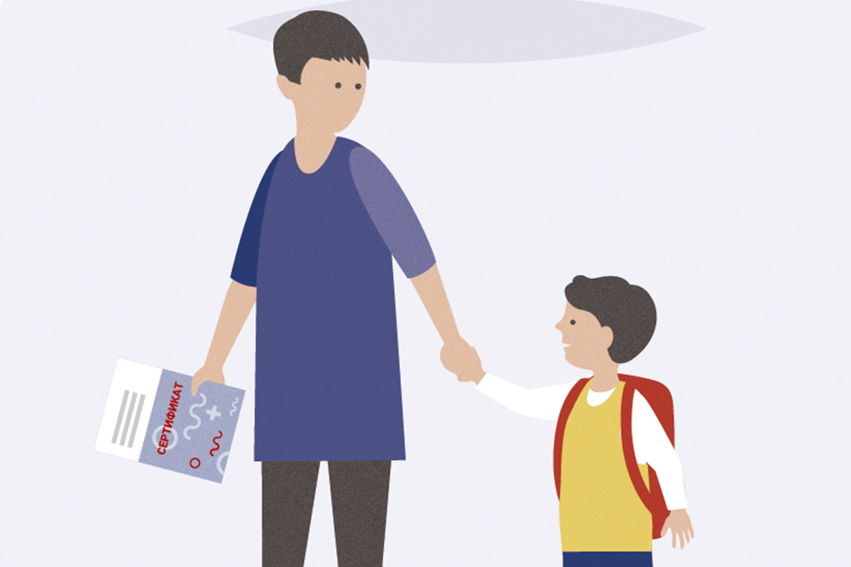
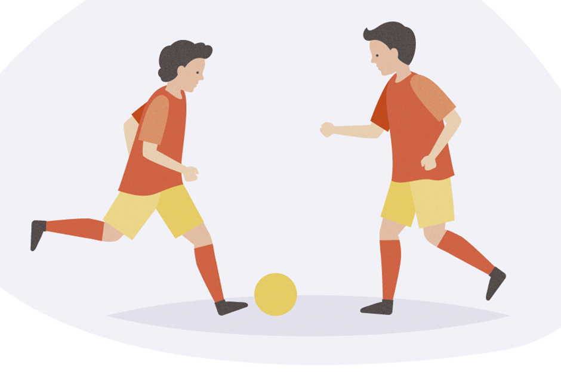
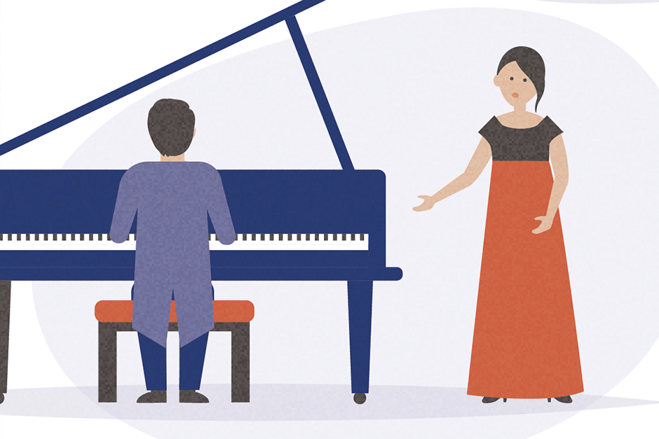
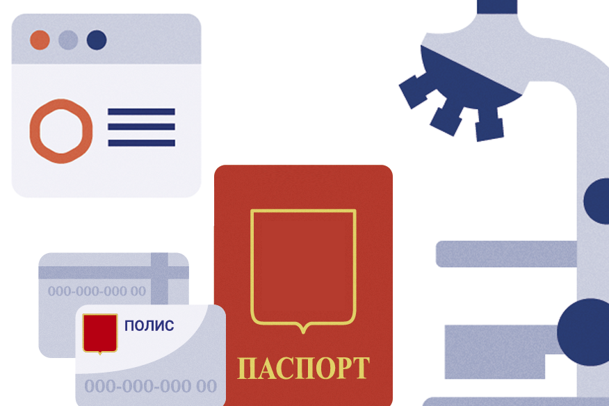

Часто задаваемые вопросы
В личном кабинете отображается Медицинский сертификат о профилактических прививках против новой коронавирусной инфекции или медицинских противопоказаниях к вакцинации или перенесенном заболевании, вызванном новой коронавирусной инфекцией. Неактуальные
данные о вакцинации, ревакцинации, ПЦР-тестировании, медотводе и перенесенном заболевании не удаляются. К имеющимся данным добавляются новые сведения о вакцинации, ревакцинации, перенесенном заболевании, результатах тестов.
Номер электронного сертификата при ревакцинации не изменяется, независимо от препарата.
Номер электронного сертификата при ревакцинации не изменяется, независимо от выбранного пункта вакцинации.
В личном кабинете на портале Госуслуг отображается Медицинский сертификат о профилактических прививках против новой коронавирусной инфекции или медицинских противопоказаниях к вакцинации или перенесенном заболевании, вызванном новой коронавирусной инфекцией.
Все новые сведения вносятся в имеющийся сертификат, меняется только его статус. Таким образом, после выздоровления сертификат разблокируется с новым сроком действия, отсчет идет уже от момента выздоровления.
При заболевании новой коронавирусной инфекцией данные вносятся в медицинский сертификат о профилактических прививках против новой коронавирусной инфекции или медицинских противопоказаниях к вакцинации или перенесенном заболевании. На период болезни сертификат
становится недоступен до момента подтвержденного выздоровления.
Сертификаты

Сертификат о вакцинации для допуска
на рабочее место

Сертификат о вакцинации для
посещения образовательных
учреждений

Сертификат о вакцинации для
посещения спортивных соревнований,
фитнес-клубов, а также для участия в
спортивных соревнованиях

Сертификат о вакцинации
для посещения учреждений культуры

Кто может получить сертификат